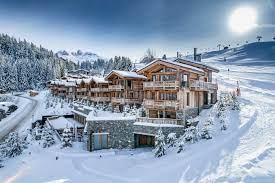

Courchevel is a French Alps ski resort. It is a part of Les Trois Vallées, the largest linked ski areas in the world. Courchevel also refers to the towns of Courchevel 1300 (Le Praz), Courchevel 1550, Courchevel 1650 (Moriond), and Courchevel 1850, which are named for their altitudes in metres. On 1 January 2017, Saint-Bon-Tarentaise (1100) merged into the new commune Courchevel.
The resort centre of Courchevel is at 1,747 metres (5,732 ft). The name Courchevel 1850 was chosen for marketing reasons to compete with rival ski resort Val d'Isère. It is the Jardin Alpin area of Courchevel 1850 rather than the centre which is located at 1,850 metres (6,070 ft).
